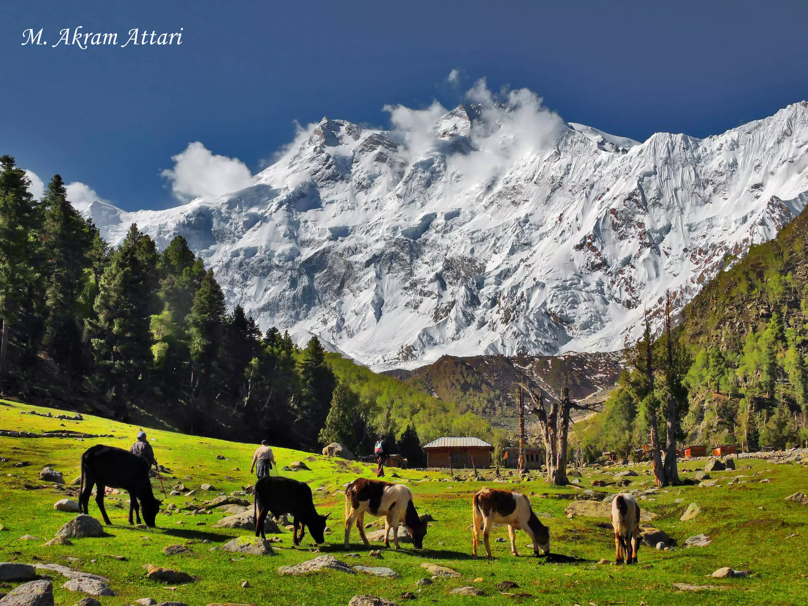

Fairy Meadows is a grassland near the base camp of Killer Mountain, Nanga Parbat. Fairy Meadows is located in District Diamer, Gilgit-Baltistan, Pakistan. It is situated at an altitude of 3,300 meters above sea level. The Government of Pakistan declared Fairy Meadows as a National Park in 1995. The original name of Fairy Meadows is Jaugth. Jaugth was named by German Climbers as “Fairy Meadows” and is now a very famous destination in Pakistan. It is approachable on a jeep from Raikot Bridge on Karakoram Highway to Tato village. From Tato, you have to trek for almost three to four hours to reach Fairy Meadows.

The tourist season in Fairy Meadows starts in April and continues till the end of September. The tourists go for camping at Raikot Serai. Fairy Meadows is partially developed and generates about 17 Million PKR revenue from tourism annually. The best time to visit Fairy Meadows is in Summer as you can’t pay a visit to this marvelous place in winter due to heavy snow and road blockage. Hike towards Fairy Meadows from April to the end of September. The base camp of Killer Mountain Nanga Parbat can be reached from Fairy Meadows. Your first destination is to reach Beyal Camp from Fairy Meadows. It will take almost two hours to reach the Beyal Camp and the path to your first destination is easy.
After that, pack up yourself to reach your final destination, Nanga Parbat Base Camp. from here, the trekkers have to take care of themselves as the path from Beyal Camp to the Nanga Parbat Base Camp is steeper and rockier, but at the same time adventurous and full of scenic views. This path will take 3 hours to reach the Base Camp. People who love traveling, must pay a visit to the lush green Fairy Meadows and the Nanga Parbat Base Camp and witness the beauty of Pakistan.